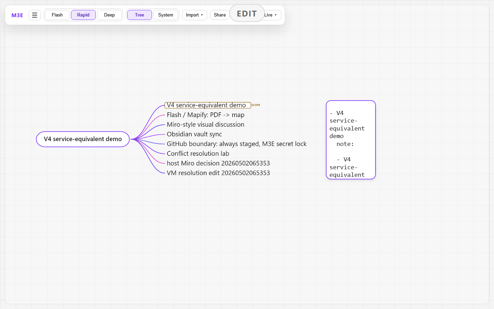

Mapify 相当
PDF から抽出したテキストを Flash draft として ingest し、承認して map に取り込んだ。

map_team_swingby_v4_slice_260502PDF から抽出したテキストを Flash draft として ingest し、承認して map に取り込んだ。
host 側の visual discussion outcome を map node として追加。Miro 的な付箋・決定・議論 cluster を M3E 上で扱う。
map を Markdown vault に export し、vault 側編集を import して戻した。vault: C:\Users\Akaghef\dev\M3E\docs\for-akaghef\v4_demo\obsidian_vault
stale な VM/Obsidian 編集は HTTP 409 で止め、remote を見た上で resolution を明示保存した。
GitHub は git add なし、常時 staged proposal、M3E secret lock、akaghef PC 正本同期を設計境界に固定。実 remote push はこの slice では実行しない。